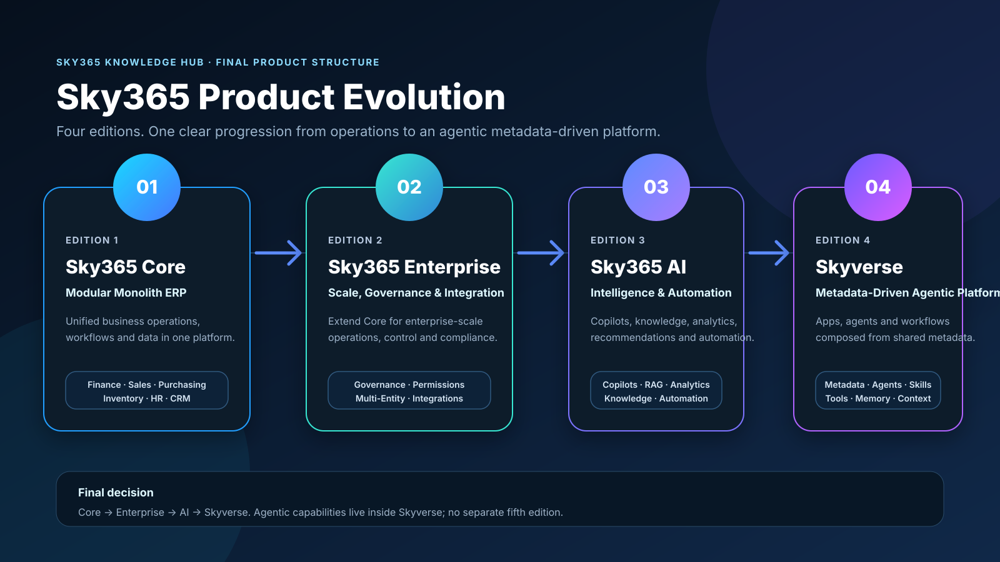
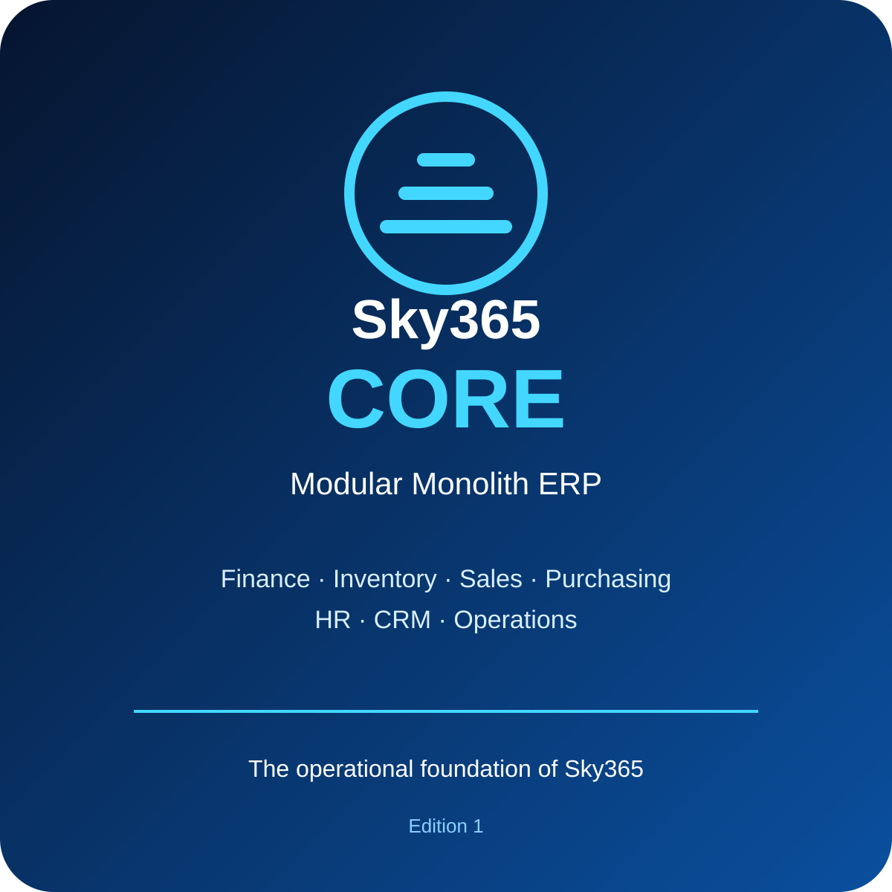
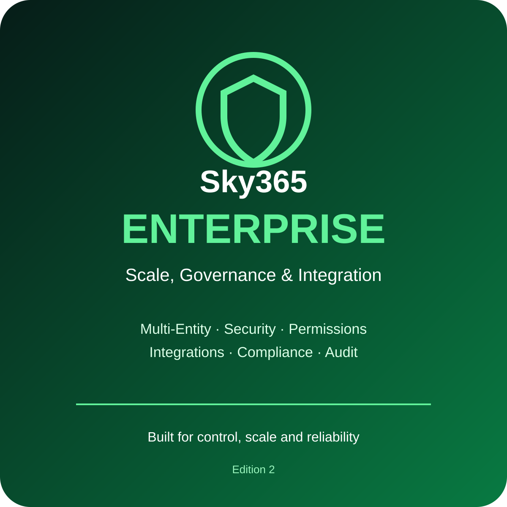
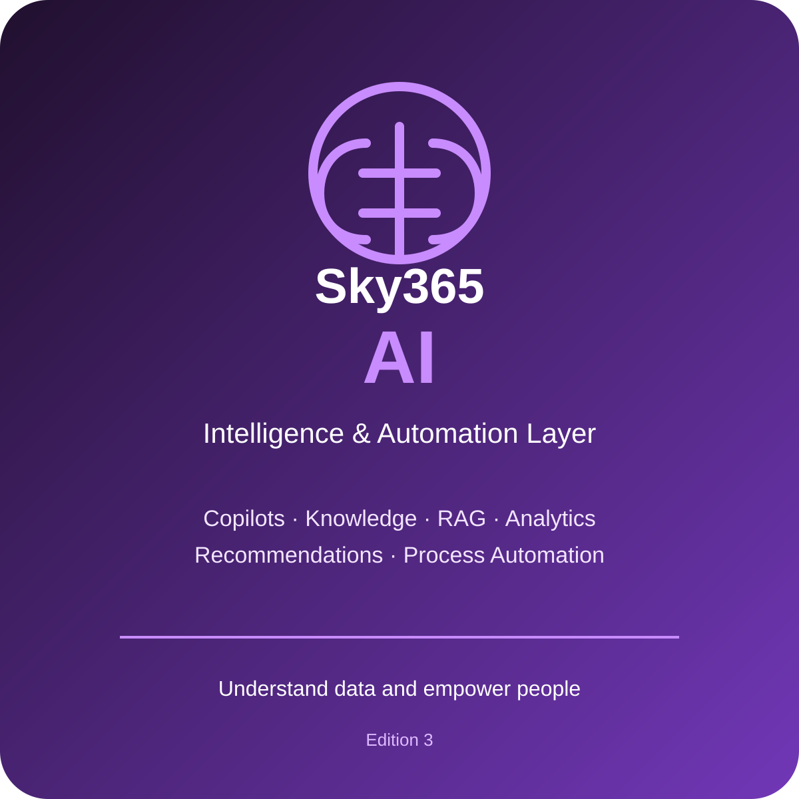
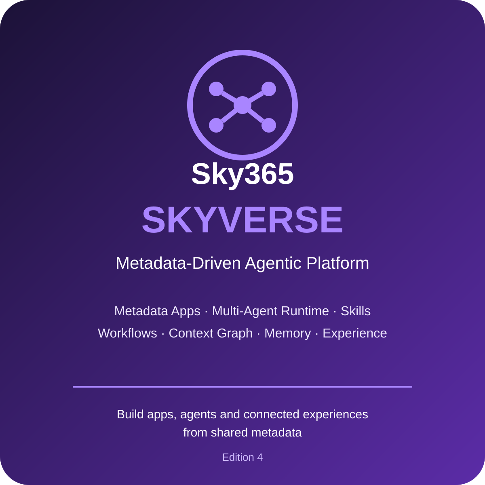

Sky365 Core
Modular Monolith ERP
Unified business operations, workflows and shared data. Finance, sales, purchasing, inventory, HR and CRM form the operational foundation.
Four editions with clear product boundaries: operational foundation, enterprise control, intelligence, and finally a metadata-driven agentic platform.

Unified business operations, workflows and shared data. Finance, sales, purchasing, inventory, HR and CRM form the operational foundation.
Extends Core with enterprise governance, advanced permissions, multi-entity operations, compliance and deep integrations.
Adds copilots, knowledge, RAG, analytics, recommendations and intelligent automation on top of the enterprise platform.
Build applications, agents, workflows and connected experiences from shared metadata, context, memory, skills and tools.



